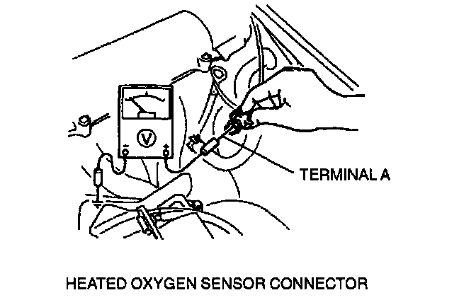
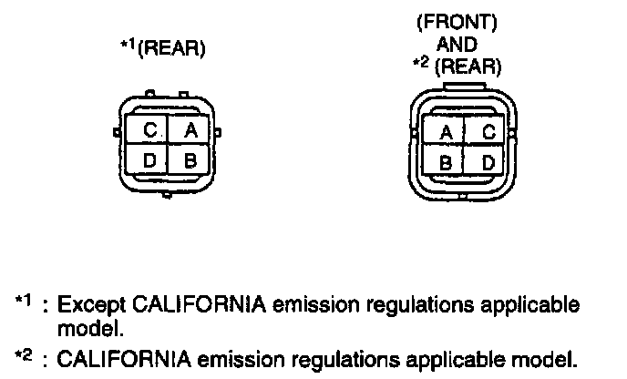
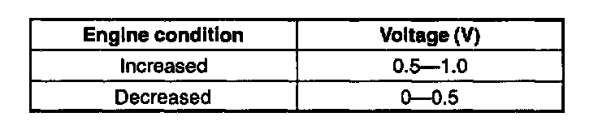
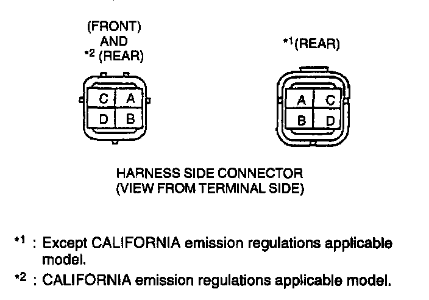

Heated Oxygen Sensor Voltage Check
Inspection of VoltageNOTE:
- Perform the following test only when detected.
1. Warm up the engine and run it at idle.
2. Disconnect the heated oxygen sensor connector.


3. Connect a voltmeter between the heated oxygen sensor connector terminal A and a ground.
4. Run the engine at 3,000 rpm until the voltmeter indicates approx. 0-1.0 V.
5. Verify that when increase and decrease the engine speed suddenly several times.

Specification
6. If not as specified, replace the heated oxygen sensor. If heated oxygen sensor is okay1 but PID value is out of specification, inspect as follows:
Open circuit
- Heated oxygen circuit (Heated oxygen sensor connector terminal A and PCM connector terminal 2C (Front).)
- Ground circuit (Heated oxygen sensor connector terminal B and PCM connector terminal 3F through common connector (Front).)
- Heated oxygen circuit (Heated oxygen sensor connector terminal A and PCM connector terminal 3J (Rear).)
- Ground circuit (Heated oxygen sensor connector terminal B and PCM connector terminal 3F through common connector (Rear).)
(Except CALIFORNIA emission regulations applicable model)

- Heated oxygen circuit (Heated oxygen sensor connector terminal A and PCM connector terminal 3J through common connector (Rear).)
Short circuit
- Heated oxygen sensor connector terminal A and PCM connector terminal 2C to ground (Front).
- Heated oxygen sensor connector terminal A and PCM connector terminal 3J to ground (Rear).
7. Reconnect the heated oxygen sensor connector.